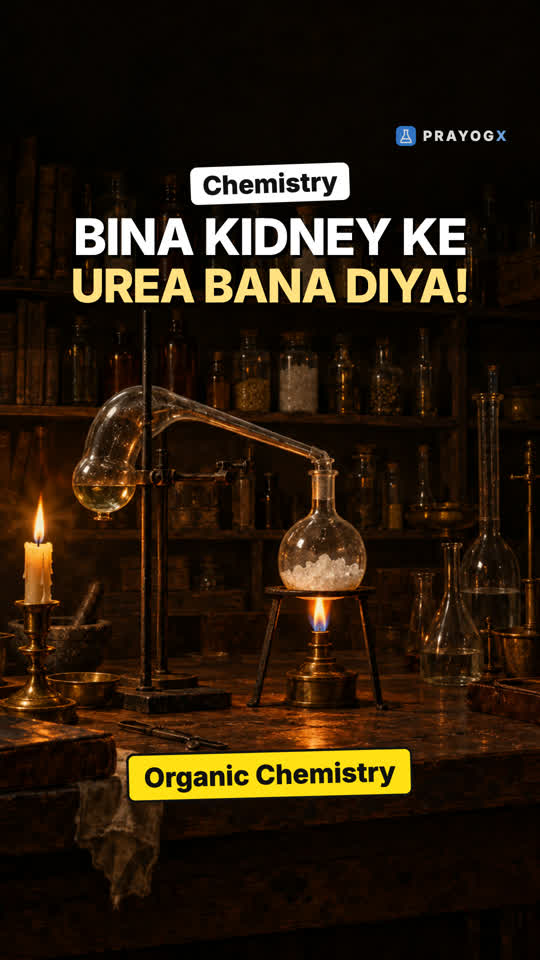
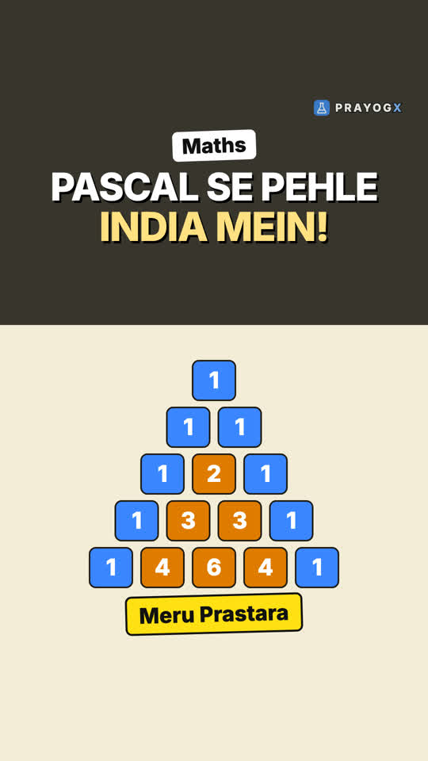
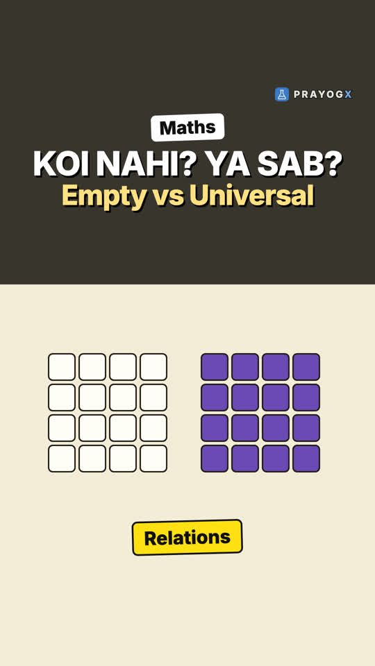
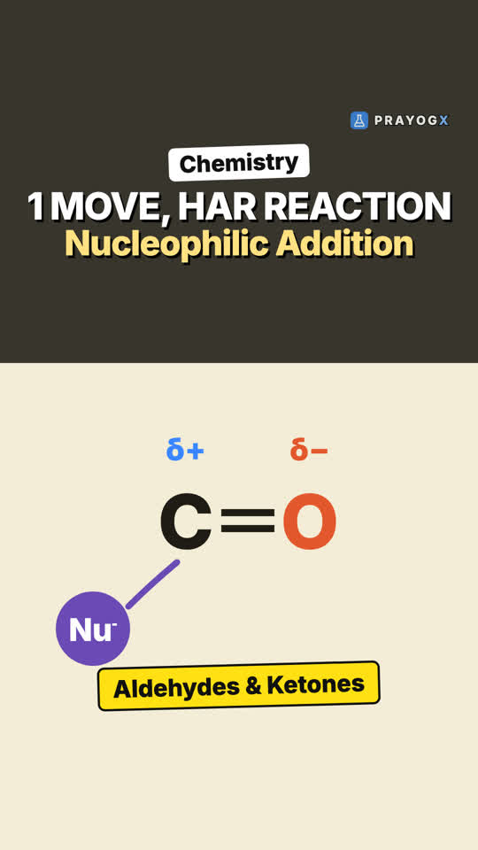
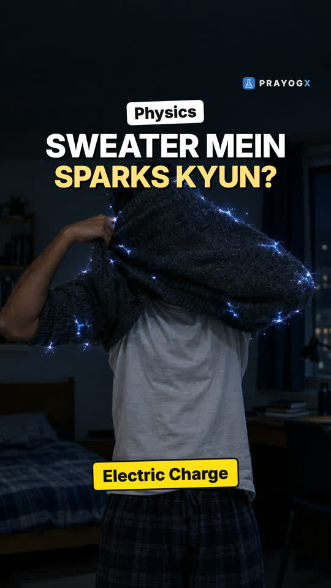

Choose your class
Every subject is laid out chapter by chapter. Each topic has a short Doodle video, notes you can download and a quick quiz.
Class 9Motion, matter, the cell and number systems: the foundations of school science and maths.ScienceMathematics21 videosClass 10Light, electricity, chemical reactions, life processes and the algebra and geometry of board year.ScienceMathematics9 videosClass 11Mechanics, thermodynamics, atomic structure, bonding, functions and the living world.PhysicsChemistryMathematicsBiology9 videosClass 12Electromagnetism, optics, modern physics, solutions and kinetics, calculus and genetics.PhysicsChemistryMathematicsBiology8 videosExtra / SupplementaryCurious questions beyond the syllabus: why the sky is blue, why we yawn, why 0.999… equals 1, and more.ScienceBiologyMathematics10 videos
Newest videos

Wöhler's Urea and the End of Vital ForceChemists once believed only living things could make organic compounds. In 1828 Friedrich Wöhler heated an inorganic salt and made urea.Organic Chemistry – Some Basic Principles and Techniques · Chemistry
Pascal's Triangle and Number PatternsOne simple rule builds a triangle full of patterns: powers of 2, triangular numbers, Fibonacci and more. And India wrote it down centuries before Pascal.Number patterns · Mathematics · simulationThe Stamen and the Four-Chambered AntherTouch a lily and your finger turns orange. Where is that pollen made? Inside the stamen, in an anther with four chambers.Sexual Reproduction in Flowering Plants · Biology
Empty and Universal RelationsIn a boys' school, who is whose sister? Nobody, and Maths has a name for that. What a relation is, and its two extreme cases.Relations and Functions · Mathematics · simulation
Nucleophilic Addition to the Carbonyl GroupMost reactions of aldehydes and ketones begin with one move. How a nucleophile attacks the polar C=O, and why aldehydes react faster than ketones.Aldehydes, Ketones and Carboxylic Acids · Chemistry
Electric Charge: Like Charges Repel, Unlike AttractThose sparks when you pull off a sweater come from electric charge. How rubbing moves electrons, what positive and negative mean, and why like charges repel.Electric Charges and Fields · Physics · simulation